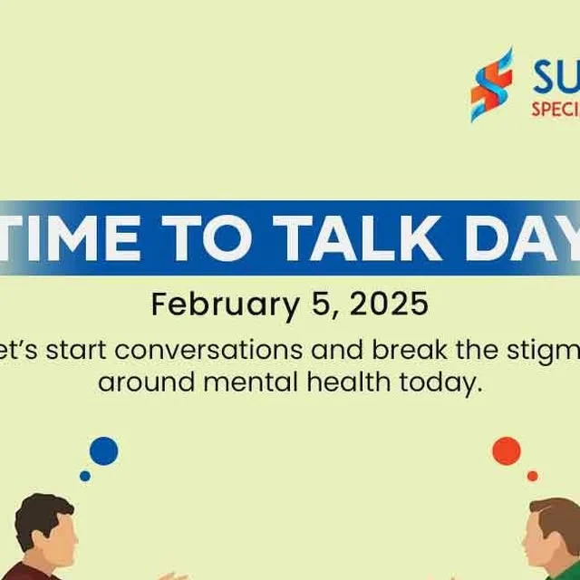
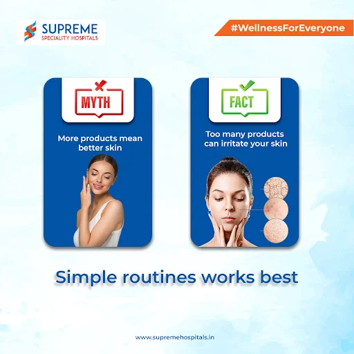
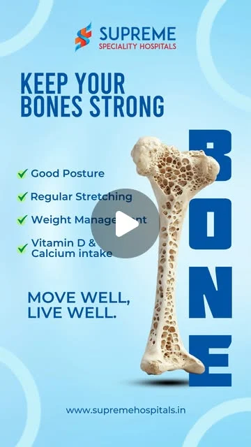
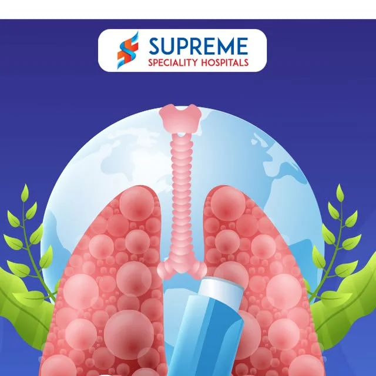
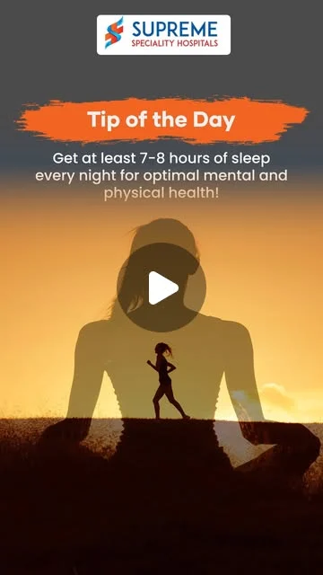
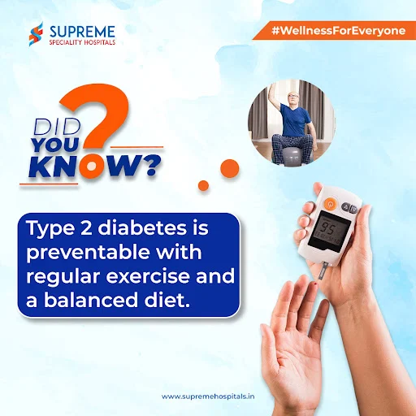
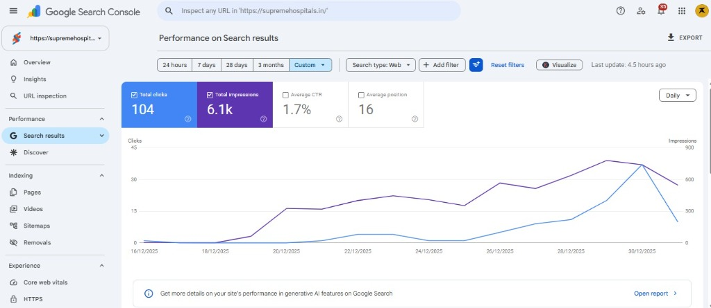
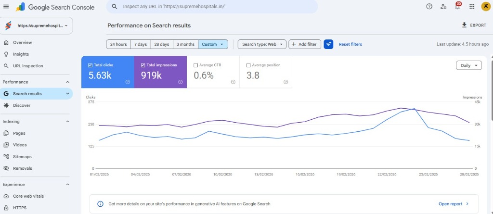

Supreme Speciality Hospital, Chennai OMR
Ranking #1 in Padur ahead of 1,000 bed neighbours using local SEO, doctor Shorts & Reels, and the 3,500+ runner OMR Marathon.

How we started and why Supreme Hospital was lagging
Surrounded by giant 1,000 bed hospitals on OMR and buried on Page 2 of Google Search.

From Go Organic Launch to #1 Local Leader on OMR
When Supreme Hospital in Padur joined D-Medva, patients searching on Google were finding Chettinad Hospital (~1,000 beds, 1 km away), Prasanth Hospital, and Kamatchi Hospital first, while Supreme sat on Page 2 (Pos 16) with just 104 clicks/mo.
We launched the 5 Channel Go Organic package—putting SEO first for local keywords like "Padur best hospital", posting regular YouTube long form videos & Reels, running 2 to 3 campaigns/month, and executing the 3,500+ runner OMR Marathon (₹5L ad spend · 5,235 landing page clicks).
Where They Were Lagging
-
1,000 Bed Neighbours: Surrounded by Chettinad Hospital (~1,000 beds, 1 km away), Prasanth & Kamatchi Hospital taking top local search spots.
-
Stuck on Page 2 of Google: Website ranked at Position 16 with only 104 monthly clicks and 6.1k impressions across OMR search queries.
-
Irregular Social Videos: Needed consistent YouTube long form doctor videos, Shorts, and Reels to build trust with OMR families.
-
Low Local Recall: Needed an SEO led organic strategy and community events without relying on heavy monthly paid ad spend.
How We Brought Them Up
-
#1 on Google Local Search: Ranked Supreme #1 for "Padur best hospital" ahead of Chettinad, Prasanth & Kamatchi Hospital.
-
Page 1 on Google (#3.8 Rank): Lifted search rank from Page 2 to #3.8, growing monthly clicks 54× from 104 to 5.63k with 919k impressions.
-
YouTube Long Videos & Reels: Consistent YouTube long form doctor videos, Shorts, and Reels that feed local brand search every week.
-
3,500+ Runner OMR Marathon: Managed posters, daily registration ads (₹5L spend · 5,235 landing page visits), influencers, and 2 to 3 monthly campaigns.
How we run all 5 channels for Supreme Hospital
Organic search, local Google Maps, doctor videos, and community events across Padur & OMR.
5 Active Channels (Go Organic Package)
Active 5 Channels
Instagram, YouTube, Facebook, #1 GMB Maps & Website SEO.
Doctor reels, emergency care tips, and local OMR health updates.
YouTube
Regular doctor Shorts and full explainers on Cardiology, Ortho & Peds.
OMR Marathon updates and 2 to 3 monthly department campaigns.
Google My Business
Ranked #1 on Google Maps for "Padur best hospital" ahead of big neighbours.
Website & SEO
54× click growth and 919k impressions on supremehospitals.in (#3.8).
#1 on Google Ahead of Big Neighbours
Ranked Supreme #1 on Google for "Padur best hospital" ahead of 1,000 bed Chettinad Hospital nearby.
Regular Doctor Shorts & Videos
Steady YouTube Shorts, Reels, and full doctor talks across Emergency, Ortho, Cardiology & Pediatrics.
OMR Marathon Event Marketing
Designed posters & reels, ran daily registration ads (₹5L marathon ad spend), worked with OMR influencers, and earned newspaper press coverage.
SEO Playbook & Monthly Drives
Local keyword targeting, active Google Maps presence, structured department SEO pages, and 2 to 3 campaigns every month.

4 Step SEO Playbook: How Supreme Ranked #1 in Padur
An organic, SEO led strategy that took Supreme from Page 2 to the #1 local result ahead of 1,000 bed neighbours.
Local Keyword Targeting
Pages and posts built around exact OMR searches like "Padur best hospital".
Google Local Presence
Maps and local listings kept active so Supreme shows up first nearby.
Department SEO Pages
Service pages structured clearly so Google ranks every specialty department.
Content That Feeds Search
YouTube videos, Reels, and 2 to 3 monthly campaigns keep brand searches growing.
Before vs Now: Social Media & Video Work
How Supreme Speciality Hospital's posts looked earlier vs how we shoot their doctor reels and shorts today.
Before D-Medva · Old Posts & Reels
104 Monthly Clicks · Page 2 Search Rank







Now With D-Medva · Doctor Reels & Shorts
5.63k Monthly Clicks (54×) · #1 Rank for Padur Best Hospital


SEO Optimization: 104 Clicks to 5.63k Clicks (54× Surge)
Verified Before & After Google Search Console performance for supremehospitals.in showing how Supreme jumped from Position 16 (Page 2) in Dec 2025 to Position 3.8 (Top Page 1) with 919k impressions in Feb 2026.

